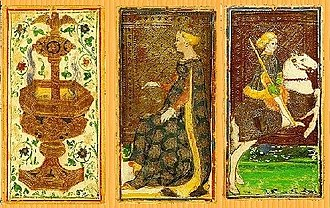
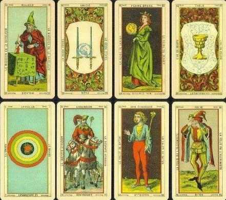

Fig 1. Visconti Deck of Tarot Cards
Tarot cards were originally evented in the 14th century in Europe. Very little is known about the original origin,
appearance and number of Tarot cards. The most significant thing is that the deck consists of 4 suits, with an early pattern
consisting of clubs, coins, swords and cups. There are suits still used in traditional Italian, Spanish and Portuguese decks of cards.
The earliest cards were hand-painted cards which rich Italian families would have commissioned to play card games.

Fig 2. Ettiella Deck of Tarot Cards
In the 18th century the cards became more accessible to a much broader population. They became part of divination in the
late 1700s in France. Etteilla, thought of as the first modern tarotist, was a French occultist who popularised tarot divination
and wrote a guide on using the cards. He published his own specific deck of tarot cards, with the meanings of the cards incorporating
beliefs about astronomy and classical elements. This has claimed to be heavily borrowed from the book of Thoth, the Egyptian god of wisdom.
The tarot decks used to be heavily influenced by Christian theme, but this has been toned down over time. The design for each
card has remained consistent in most modern decks. One of the most popular decks is the Rider-Waite deck, which has been adapted
by many artists to make very unique cards while always consisting of the same details and positioning. The recreation of these cards
build a vibrant depiction of this evolving art form.
Modern decks of tarot cards consist of 78 cards, being a combination of major and minor arcana. The Major arcana describe
spiritual matters and important trends in questioner’s life, where as the Minor arcana deal with business matters and career ambitions.
The cards’ meanings are modified depending on whether it is upside down, its position in the spread and meaning of adjacent cards.